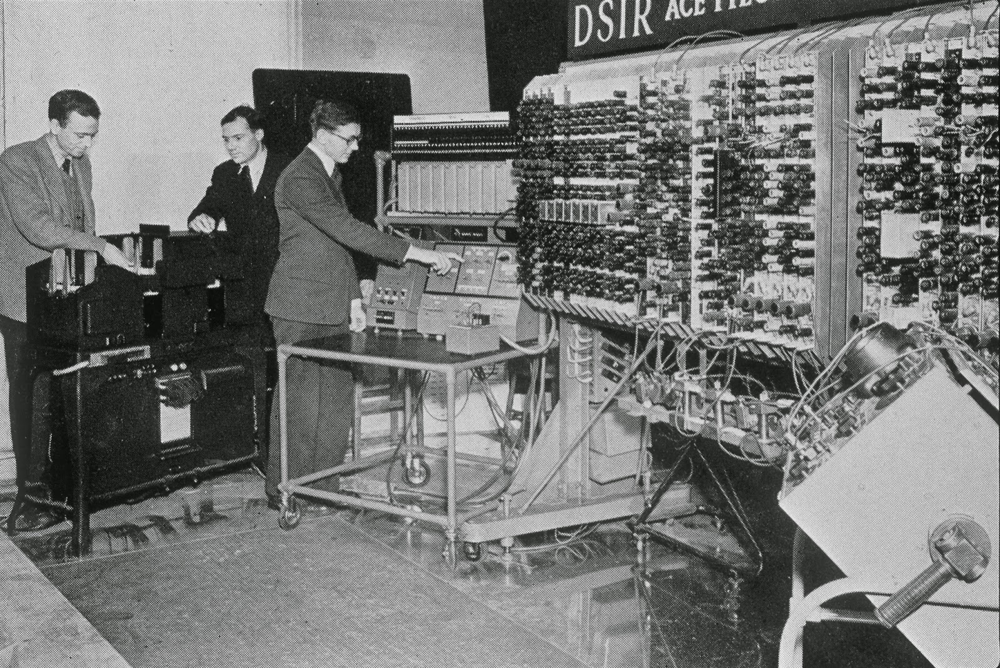

The Bombe: a máquina de Turing
Como mencionado, a máquina criada por Turing, ou a sua bomba eletromecânica, era usada para decifrar mensagens emitidas pelas forças armadas alemãs e criptografadas por uma outra máquina chamada Enigma. Essas mensagens eram emitidas em forma de ondas de rádio, por isso eram facilmente interceptadas em Bletchley Park.
A Bombe era um enorme computador eletromecânico que pesava quase uma tonelada e tinha cerca de 1,80 m altura. Na parte frontal da máquina, havia 108 eixos, que eram agrupados em nove linhas com 12 espaços cilíndricos. Nesses cilindros eram encaixados os tambores, que, depois de programados manualmente, por meio de cartões com pequenos furos, giravam simultaneamente, combinando as letras de cada tambor com as mensagens captadas em agrupamentos de três letras.
Os tambores iniciavam a combinação em uma determinada letra e, ao final de cada ciclo, sua posição era incrementada para a próxima letra, assim, o ciclo era iniciado novamente. Ao todo, cada ciclo passava por um total de 17.576 posições diferentes. Agora, vamos entender como funcionava a máquina que codificava as comunicações realizadas pelos nazistas e que foi decifrada por meio do trabalho de Turing.
Enigma: como funcionava
Como mencionado, os poloneses foram os responsáveis por construir as primeiras bombas eletromecânicas. Elas obtiveram algum êxito em decifrar as mensagens criptografadas pela Enigma, no entanto, esse sucesso diminuiu drásticamente conforme a máquina alemã era aprimorada pelos engenheiros nazistas. Uma dessas implementações tornou-a indecifrável. No entanto, a captura de algumas chaves de criptografia possibilitou a quebra dos códigos nazistas. Foi nesse cenário que a programação feita por Alan Turing e sua equipe mostrou a sua utilidade.
O cientista da computação teve a ideia de implementar uma nova bomba eletromecânica, mais eficiente que as anteriores. Para tanto, programou-a prevendo a existência de trechos que se repetiam em grande parte das mensagens, além disso, soube como explorar uma grande falha na criptografia usada pela Enigma, da qual falaremos mais adiante.
A Enigma podia ser configurada em 26 modos de encriptação distintos, baseados na posição em que três eixos mecânicos eram conectados entre si. A letra presente no primeiro eixo determinava quais seriam as letras seguintes. Desse modo, se a primeira letra fosse A, por exemplo, quando se digitava a letra J, essa era substituída pela letra B, no entanto, caso a letra inicial fosse B, a letra J seria substituída pela letra C. A letra inicial de cada mensagem era, portanto, a chave criptográfica de cada mensagem, e, por isso, era trocada todos os dias, exatamente à meia-noite.
Alan Turing e sua equipe sabiam do modo como a posição dos eixos da Enigma mudava a encriptação das mensagens e também que essa configuração era alterada todos os dias. Em uma de suas tentativas de quebrar o código criptografado, Turing desenvolveu uma técnica pela qual a Bombe buscava “atacar” uma frase específica que se repetia na mesma posição, em todas as mensagens trocadas entre as forças armadas nazistas. Além disso, o cientista inglês também se beneficiou de uma grande falha da máquina alemã: ela não era capaz de criptografar uma mensagem sem alterar todas as suas letras.
Isso indicava que se a frase original contivesse a letra A, por exemplo, a letra criptografada jamais poderia ser A, independentemente de qual fosse a configuração em que a máquina estava. Baseada nisso, a Bombe procurava a frase que se repetia e combinava-a às outras 26 possibilidades de configuração, captadas ao longo do tempo, até que, em alguma dessas combinações, a mesma letra não se repetisse. A frase em questão, presente no final de todas as mensagens, era “Heil Hitler” (salve Hitler).
referência
SILVA, Daniel Neves. "Alan Turing"; Brasil Escola. Disponível em:brasilescola.uol.com. Acesso em 14 de maio de 2020.